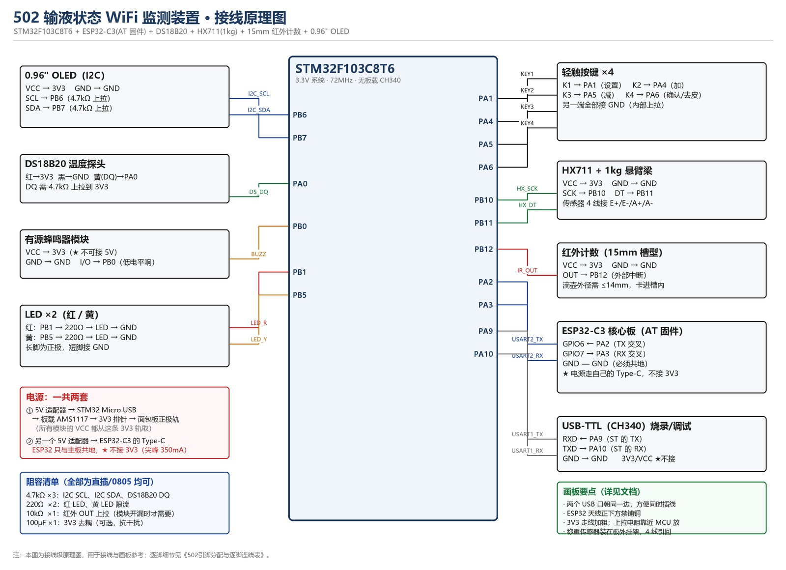
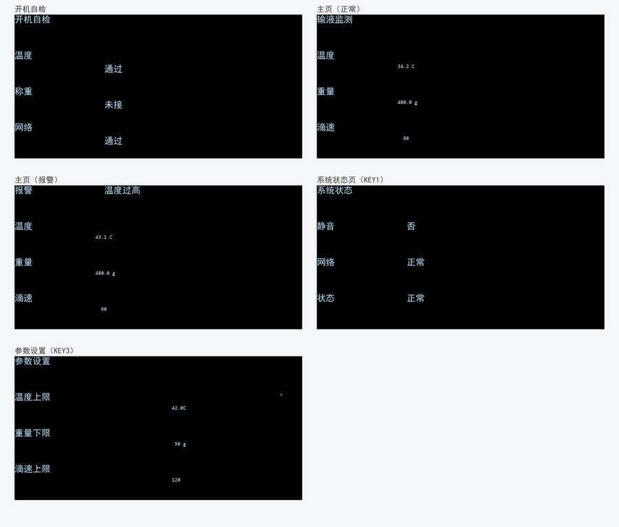

输液状态无线监测装置（受托开发）
与毕设①同源的工程方法，换到一个更苛刻的传感场景：称重、测温、滴速三路信号，标定复核到 ±0.1 g——比指标严二十倍。

系统接线原理图：STM32 居中 + 9 个外设模块 + 双电源方案
受托项目：课题与实机验证由委托方负责，本页展示实现侧工作；简要呈现——方法与毕设①相通，完整细节在仓库。
Overview
这台装置
- 称重复核 ±0.1 g（指标 ±2 g，余量二十倍；SCALE = 741.6 counts/g、线性度 0.14%）。
- 温度、滴速与 7 工况黄/红报警矩阵 + R 位掩码上报。
- 13 段分阶段固件（0 错 0 警），含一次上电验证全部接线的「接线自检」工程。
- Android 客户端自绘控件：克重主视觉、温度表盘、2 分钟趋势图。
分阶段验证、如实标注的验证等级、CHANGELOG 复盘——这套方法与「四参数生理监测终端」同源，完整故事都在仓库里。
Demo
App 与屏幕


Results
数字
| 指标项 | 实测 | 状态 |
|---|---|---|
| 称重精度 | 复核最大偏差 ±0.1 g（指标 ±2 g） | PASS |
| 液体温度 | DS18B20 防水探头，上板验证 | PASS |
| 滴速 | 原理验证通过；整机联调数据待最终采集 | PENDING |
| 两级声光报警 | 7 工况矩阵，黄/红，蜂鸣器 + 双 LED | PASS |
| 无线传输 | AP + TCP，App v3 已连通渲染 | PASS |